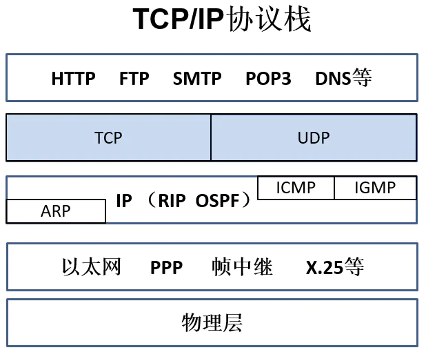

传输层协议TCP和UDP
TCP/IP协议， 你一定常常听到，其中TCP（Transmission Control Protocol）称为 传输控制协议，IP（Internet Protocol） 称为网际协议。
事实上TCP/IP协议，是一个协议族，是一个协议的集合。
TCP/IP协议，定义了一整套规则。它定义整个互联网如何连接，如何通信，如何协商的最基础规则。
TCP/IP协议分为五层，分别是应用层、传输层、网络层、数据链路层、物理层。每层都有对应的相关协议，其中TCP和UDP是传输层的两个协议。

理解TCP和UDP
| 特点 | TCP | UDP |
|---|---|---|
| 是否连接 | 面向连接 | 无连接 |
| 传输是否可靠 | 可靠 | 不可靠 |
| 应用场景 | 传输大量数据 | 少量数据 |
| 顺序 | 有序 | 无序 |
| 速度 | 慢 | 快 |
既然他们是传输层的协议，那么他们的作用当然就是用来负责传输数据了。
我们想象一个场景，网络中随意的两端要通信，会采取什么传输方式呢？
可以先想象一下人类之间的通信。
第一种是打电话。我拨通电话你的电话，直到你回答“你好”，我听到声音之后，我们之间才继续进行交谈。
另一个是发短信。我给你的手机号发送一条短信，无法知道你是否收到，然后我就只能等待你的回复了。
其中第一种方式对应TCP，而第二种对应UDP。TCP是需要对方确认的，也就是传输之前需要进行三次握手（传输的两端需要经过三次握手，才开始通信）。UDP着比较粗暴，不论对方什么情况，直接发送，不需要确认过程。
而上图中的看到的，TCP是可靠的，UDP是不可靠的，就是这个意思。
可靠的连接带来的是效率的下降。比如一次网络请求，很大一部分时间其实都是浪费在互相确认的过程当中，资源消耗比较多，保证了数据传输是可靠的，而且传输数据是有序的。不可靠的连接带来的是效率的提升，但可能服务质量有下降。
要摆脱一种人为的误区，不要以为UDP不可靠，就没有应用场景。据说QQ发送数据就是靠UDP发送的，尽管是不可靠的连接，可是还是用了非常多的校验算法保证了数据质量稳定，同也保证了效率。TCP尽管耗时，可是对于稳定性优先的场景，还是应该有限选用TCP，比方浏览器中访问网页用的就是TCP。此外在一些长连接系统里面，比方微信，连接通道应该也是用TCP建立的，由于要维持一条稳定的信息传输通道。
协议是怎么控制，数据包是怎么传输，怎么校验数据的正确性，还有重传特性。这些都是协议中重要的控制过程，在这里不做详解，因为对于实际的产品并没有太大的用。至于如何选定传输数据方式，应该依据场景而定。
安全的东西往往不快，反之亦然。而TCP和UCD之间也是这样
TCP(传输控制协议)
TCP(传输控制协议)是基于连接的。在正式收发数据之前，必须要与对方建立连接。这之间需要经过'三次握手':
第一步. 首先A主机需要和B主机之间建立数据收发，A需要发送一个请求询问B：'我要建立连接'；
第二步. B收到消息后，会给A发送一个回应：'可以连接'；
第三步. A收到B的回应后，A向B再次回应：'我要开始发送了'，他们之间就可以建立连接了；
第一次握手的结论是：A的发送能力、B的接收能力正常。
第二次握手的结论是：B的发送能力、A的接收能力正常。
第三次握手的结论是：A的接收、发送能力，B的接收、发送能力都是正常的。
'3次握手'的作用就是 双方都能明确自己和对方的收、发能力是正常的.
UDP(用户数据报协议)
UDP(用户数据报协议)是面向非连接的，不与对方建立连接，而直接把数据报=包发送出去。UDP适用于一次传输少量的数据，对于可靠性要求不高的应用环境。日常生活中使用的ping命令测试主机是否通信正常，事实上'ping'命令的原理就是向对方主机发送UDP数据包，然后对方主机确认收到数据包，假设数据包是否到达的消息及时反馈回来了，那么网络传输就是正常的。
适用场景
- TCP：是全双工、面向连接、可靠的，而且精确控制的协议。主要用于实时性不强，但传输要求高的应用。比方说：网页浏览、文件下载(不是BT、电脑下载)、邮件的发送等场合，这些场景需要TCP协议进行传输。当然，它在网络方面的开销是昂贵的。
- UDP：这是一个不可靠的传输协议。由于它不排序所要发送的数据段，不负责这些数据段到达目标的顺序（说一它才不可靠）。它在网络的开销要比TCP小很多，因此UDP适合用在那些实时性强、允许出错的场合。比如说：即时通讯(MSN、QQ)，视频、语言等方面。